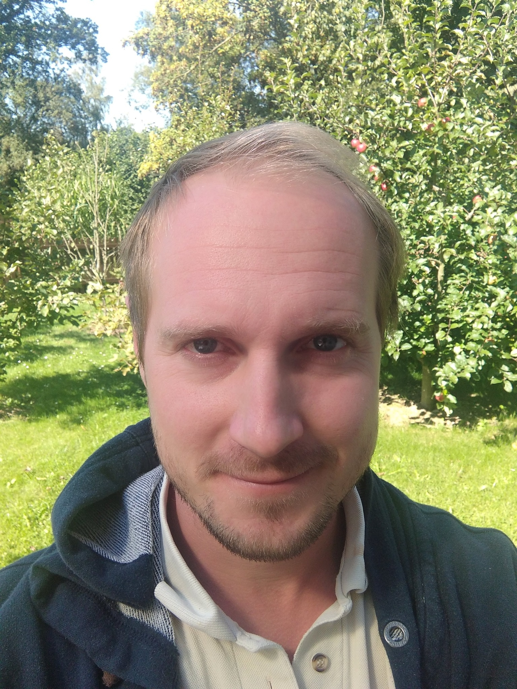

O mně

Čím se zabývám: permakulturní design, navrhování a projektování agrolesnických systémů.
Minulé relevantní zkušenosti:
- Úplný kurz permakulturního designu
- Praxe v navrhování a realizaci zahrad (7 let)
- Praxe v budování květinové farmy (3 roky)
Současná aktivita: praxe v budování regenerativní farmy Farma Štamberk (3 roky) – nosnice, skot, agrolesnictví.
Zájem a fascinace: permakultura, agrolesnictví, regenerativní postupy, biodiverzita, biouhel, půdní život, houby, kompostování...
Kontakt
Email: vilem.kerous@gmail.com
Telefon: 608 664 407
Těším se na spolupráci s návratem stromů do zemědělské krajiny!